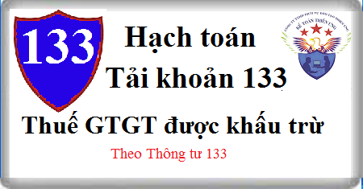

Cách hạch Tài khoản 133 theo Thông tư 133, cách hạch toán Thuế GTGT phải nộp (đầu ra), cách hạch toán thuế Giá trị gia tăng đầu vào được khấu trừ và không được khấu trừ theo Thông tư 133, kết cấu, nội dung Tải khoản 133.
1. Nguyên tắc kế toán Tài khoản 133 - Thuế GTGT được khấu trừ:
a) Tài khoản này dùng để phản ánh số thuế GTGT đầu vào được khấu trừ, đã khấu trừ và còn được khấu trừ của doanh nghiệp.
b) Kế toán phải hạch toán riêng thuế GTGT đầu vào được khấu trừ và thuế GTGT đầu vào không được khấu trừ. Trường hợp không thể hạch toán riêng được thì số thuế GTGT đầu vào được hạch toán vào Tài khoản 133. Cuối kỳ, kế toán phải xác định số thuế GTGT được khấu trừ và không được khấu trừ theo quy định của pháp luật về thuế GTGT.
Xem thêm: Điều kiện khấu trừ thuế GTG đầu vào
c) Số thuế GTGT đầu vào không được khấu trừ được tính vào giá trị tài sản được mua, giá vốn của hàng bán hoặc chi phí sản xuất, kinh doanh tùy theo từng trường hợp cụ thể.
d) Việc xác định số thuế GTGT đầu vào được khấu trừ, kê khai, quyết toán, nộp thuế phải tuân thủ theo đúng quy định của pháp luật về thuế GTGT.
2. Kết cấu và nội dung Tài khoản 133 - Thuế GTGT được khấu trừ
Bên Nợ:
Số thuế GTGT đầu vào được khấu trừ.
Bên Có:
- Số thuế GTGT đầu vào đã khấu trừ;
- Kết chuyển số thuế GTGT đầu vào không được khấu trừ;
- Thuế GTGT đầu vào của vật tư, hàng hóa mua vào nhưng đã trả lại, được chiết khấu, giảm giá;
- Số thuế GTGT đầu vào đã được hoàn lại.
Số dư bên Nợ:
Số thuế GTGT đầu vào còn được khấu trừ, số thuế GTGT đầu vào được hoàn lại nhưng NSNN chưa hoàn trả.
Tài khoản 133 - Thuế GTGT được khấu trừ, có 2 tài khoản cấp 2:
- Tài khoản 1331 - Thuế GTGT được khấu trừ của hàng hóa, dịch vụ: Phản ánh thuế GTGT đầu vào được khấu trừ của vật tư, hàng hóa, dịch vụ mua ngoài dùng vào sản xuất, kinh doanh hàng hóa, dịch vụ thuộc đối tượng chịu thuế GTGT tính theo phương pháp khấu trừ thuế.
- Tài khoản 1332 - Thuế GTGT được khấu trừ của tài sản cố định: Phản ánh thuế GTGT đầu vào của quá trình đầu tư, mua sắm tài sản cố định, bất động sản đầu tư dùng vào hoạt động sản xuất, kinh doanh hàng hóa, dịch vụ thuộc đối tượng chịu thuế GTGT tính theo phương pháp khấu trừ thuế.
3. Cách hạch toán Thuế GTGT được khấu trừ Tài khoản 133:
3.1. Khi mua hàng tồn kho, TSCĐ, BĐSĐT, nếu thuế GTGT đầu vào được khấu trừ, ghi:
Nợ các TK 152, 153, 156, 211, 217, 611 (giá chưa có thuế GTGT)
Nợ TK 133 - Thuế GTGT được khấu trừ (1331, 1332)
Có các Tài khoản 111, 112, 331,... (tổng giá thanh toán).
3.2. Khi mua vật tư, hàng hoá, công cụ, dịch vụ dùng ngay vào sản xuất, kinh doanh, nếu thuế GTGT đầu vào được khấu trừ, ghi:
Nợ các Tài khoản 154 642, 241, 242,... (giá chưa có thuế GTGT)
Nợ TK 133 - Thuế GTGT được khấu trừ (1331)
Có các Tài khoản 112, 111, 331,... (tổng giá thanh toán).
3.3. Khi mua hàng hoá giao bán ngay cho khách hàng (không qua nhập kho), nếu thuế GTGT được khấu trừ, ghi:
Nợ TK 632 - Giá vốn hàng bán (giá mua chưa có thuế GTGT)
Nợ TK 133 - Thuế GTGT được khấu trừ (1331)
Có các TK 111, 112, 331,... (tổng giá thanh toán).
3.4. Khi nhập khẩu vật tư, hàng hoá, TSCĐ:
- Kế toán phản ánh giá trị vật tư, hàng hoá, TSCĐ nhập khẩu bao gồm tổng số tiền phải thanh toán cho người bán (theo tỷ giá giao dịch thực tế), thuế nhập khẩu, thuế tiêu thụ đặc biệt, thuế bảo vệ môi trường phải nộp (nếu có), chi phí vận chuyển, ghi:
Nợ Tài Khoản 152, 153, 156.... hoặc
Nợ Tài khoản 211 Tải sản cố định
Có Tài khoản 331 Phải trả người bán
Có TK 3331 - Thuế GTGT phải nộp (33312) (nếu thuế GTGT đầu vào của hàng nhập khẩu không được khấu trừ)
Có TK 3332 - Thuế tiêu thụ đặc biệt.
Có TK 3333 - Thuế xuất, nhập khẩu (chi tiết thuế nhập khẩu)
Có TK 33381 - Thuế Bảo vệ môi trường
Có các TK 111, 112, ...
- Nếu thuế GTGT đầu vào của hàng nhập khẩu được khấu trừ, ghi:
Nợ TK 133 - Thuế GTGT được khấu trừ (1331, 1332)
Có TK 333 - Thuế và các khoản phải nộp Nhà nước (33312).
3.5. Trường hợp hàng đã mua và đã trả lại hoặc hàng đã mua được giảm giá do kém, mất phẩm chất: Căn cứ vào chứng từ xuất hàng trả lại cho bên bán và các chứng từ liên quan, kế toán phản ánh giá trị hàng đã mua và đã trả lại người bán hoặc hàng đã mua được giảm giá, thuế số GTGT đầu vào được khấu trừ, ghi:
Nợ các TK 111, 112, 331 (tổng giá thanh toán)
Có TK 133 - Thuế GTGT được khấu trừ (thuế GTGT đầu vào của hàng mua trả lại hoặc được giảm giá)
Có các TK 152, 153, 156, 211,... (giá mua chưa có thuế GTGT).
Xem thêm: Cách viết hóa đơn hàng bán trả lại
3.6. Trường hợp không hạch toán riêng được thuế GTGT đầu vào được khấu trừ:
a) Khi mua vật tư, hàng hóa, TSCĐ, ghi:
Nợ Tài khoản 156 Hàng hóa (giá mua chưa có thuế GTGT) hoặc
Nợ các TK 152, 153, 211 (giá mua chưa có thuế GTGT)
Nợ TK 133 - Thuế GTGT được khấu trừ (thuế GTGT đầu vào)
Có các TK 111, 112, 331,...
b) Cuối kỳ, kế toán tính và xác định thuế GTGT đầu vào được khấu trừ, không được khấu trừ theo quy định của pháp luật về thuế GTGT. Đối với số thuế GTGT đầu vào không được khấu trừ tính vào giá vốn hàng bán trong kỳ, ghi:
Nợ TK 632 - Giá vốn hàng bán
Có TK 133 - Thuế GTGT được khấu trừ (1331).
3.7. Vật tư, hàng hóa, TSCĐ mua vào bị tổn thất do thiên tai, hoả hoạn, bị mất, xác định do trách nhiệm của các tổ chức, cá nhân phải bồi thường, nếu thuế GTGT đầu vào của số hàng hóa này không được khấu trừ:
- Trường hợp thuế GTGT của vật tư, hàng hoá, TSCĐ mua vào bị tổn thất chưa xác định được nguyên nhân chờ xử lý, ghi:
Nợ Tài khoản 138 Phải thu khác (1381)
Có TK 133 - Thuế GTGT được khấu trừ (1331, 1332).
- Trường hợp thuế GTGT của vật tư, hàng hoá, TSCĐ mua vào bị tổn thất khi có quyết định xử lý của cấp có thẩm quyền về số thu bồi thường của các tổ chức, cá nhân, ghi:
Nợ các TK 111, 334,... (số thu bồi thường)
Nợ TK 632 - Giá vốn hàng bán (nếu được tính vào chi phí)
Có TK 138 - Phải thu khác (1381)
Có TK 133 - Thuế GTGT được khấu trừ (nếu xác định được nguyên nhân và có quyết định xử lý ngay).
3.8. Cuối tháng, kế toán xác định số thuế GTGT đầu vào được khấu trừ vào số thuế GTGT đầu ra khi xác định số thuế GTGT phải nộp trong kỳ, ghi:
Nợ TK 3331 Thuế GTGT phải nộp(33311)
Có TK 133 - Thuế GTGT được khấu trừ.
3.9. Khi được hoàn thuế GTGT đầu vào của hàng hoá, dịch vụ, ghi:
Nợ các TK 111, 112,....
Có TK 133 - Thuế GTGT được khấu trừ (1331).
---------------------------
Kế toán Diệu Tâm xin chúc các bạn thành công! Các bạn muốn học kê khai thuế, tính thuế, xác định thuế được khấu trừ, không được khấu trừ, xác định chi phí hợp lý… Quyết toán thuế thực tế chuyên sâu có thể tham gia: Lớp học kế toán thuế thực hành